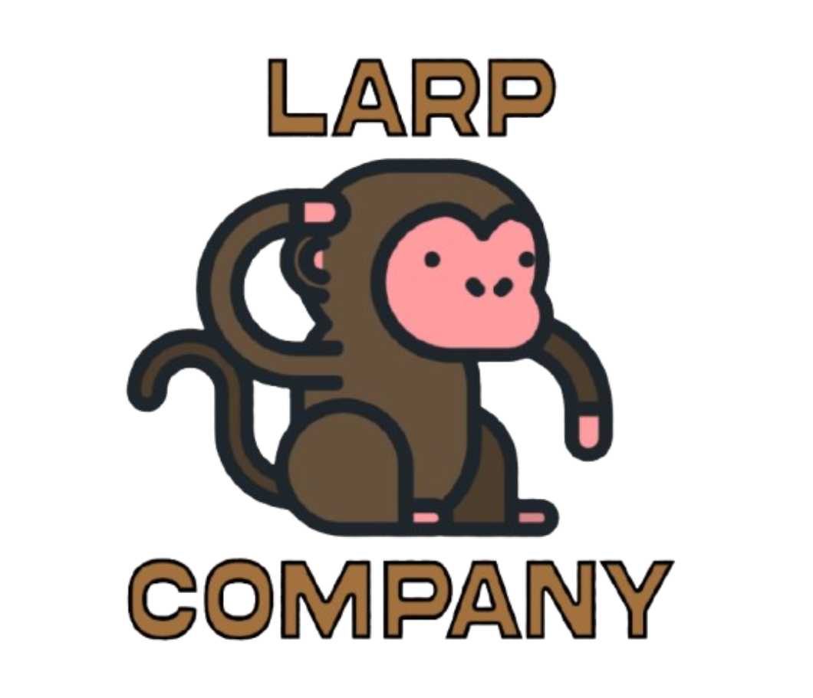

Log in
Reuben
|
Hello world! I'm Reuben, if you've clicked this then welcome to my page 🙂! I'm an international undergraduate student at Beijing Institute of Technology coming from Indonesia. At the time of writing, I'm 19 years old. Currently, I'm studying Computer Science as a second year. I chose Computer Science for my field of study because of my passion and fascination with technology, and how it works behind the scenes.
After spending a year on campus, I believe that I've found where my passion lies: that is Game Development. During my second semester, I was given the opportunity to have a try at building a 2D game using Raylib and the C programming language. To put it shortly, we made a 2D top-down rogue-like game. I've come to a realization that while designing and building the game, I had a very fun time doing so. Besides finding my passion, I've also strengthened my skills in general computer knowledge, programming, logical, and mathematical skills, which I personally believe are all necessary for anyone majoring in Computer Science.
Outside of my academic life, I'm also currently learning the Mandarin language, because as of right now I can only speak two languages: my home country's, that is Indonesian, and English. I believe that learning Mandarin can also help me with daily communication, broadening my connections and relationships with those around me, and understanding Chinese culture better.
I also have some hobbies of my own. My favorite sport is swimming, since I've already been doing it for more than 6 years at this point. My favorite anime/manga at the moment is Jujutsu Kaisen, since I think its story and power system are quite interesting. My favorite games to play in my free time are Genshin Impact and Arknights, which both had some inspiration on that game I mentioned we worked on during my 2nd semester. Recently, I've also been picking up a TV show that I've been enjoying, which is Dexter.
That's all about me, thank you for taking your time to visit my page, and have fun looking around the rest of our website!
- - 🏊 Favorite sport: Swimming
- - Favorite color:
Red - - Favorite games: Genshin Impact & Arknights
- - Favorite animanga series: Jujutsu Kaisen
- - Favorite TV show: Dexter
- - Learning Mandarin as a 3rd language
- - Walks surprisingly alot everyday
- - Likes larping
- - Initially came up with the team name "LARP COMPANY"